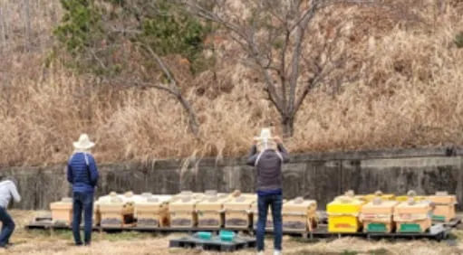
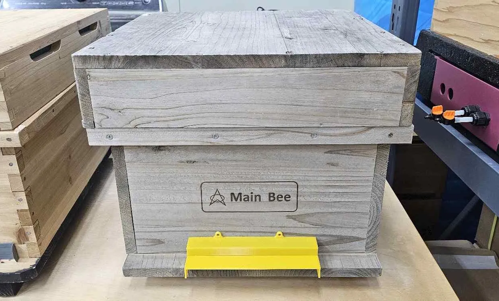
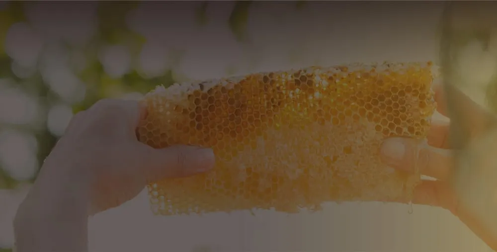
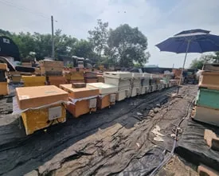
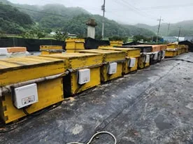
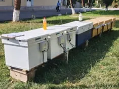
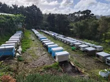

마누카 꿀 라벨, ‘마누카’는 정부가 정하고 UMF는 협회가 매긴다
뉴질랜드 ‘마누카’ 수출 꿀은 성분 4가지·꽃가루 DNA로 판정…MGO는 성분 하나의 양
검토용 미리보기입니다. 아직 공개되지 않은 초안을 포함하고 있으며, 검토 의견은 발행인에게 알려 주세요.
양봉 신기술과 사람 이야기
뉴질랜드 ‘마누카’ 수출 꿀은 성분 4가지·꽃가루 DNA로 판정…MGO는 성분 하나의 양
소문은 좁히고 눈은 치우고 쥐는 막고, 봄 먹이 미리 챙기고 월동 끝나면 곧바로 응애 방제
농진청·강원대 개발, 벌집판 사진으로 판별…정확도 97.8%의 뜻과 아직 모르는 것
비온팜 소개서 개발 경과엔 2022년 현지 박람회 참가·농가 실증, 2023년 오클랜드 테스트베드 구축
몸 떨어 열 내는 꿀벌, 농촌진흥청 스마트 벌통 시험서 꿀벌 무리 90% 이상 안정적으로 월동
4월 중순부터 7월 말까지 차례로 피는 밀원수, 국립수목원 자료로 본 꽃 색과 분포
2022년 세계 꿀벌의 날 공개된 태양광 벌집, 비온팜은 자사가 개발한 시스템으로 소개
어댑터 거친 직류 전원에 알루미늄 판·세라믹 발열체…온도는 휴대폰으로 맞춘다
뉴질랜드 양봉장 3곳 벌통 50통 대상…1년에 한 번 설문뿐인 응애 피해 측정 공백 겨냥




벌집틀 한 장에 꿀 2~3kg, 체중계 대신 전용 저울로 벌통·화분떡 무게 추이를 본다

벌 몸과 벌집 방 오가며 번식…꿀벌 무리 손실 통계는 주로 1년에 한 번 하는 설문에 기대





꿀벌의 밥상이 차려지는 때 (자료: 국립수목원, 비온팜 밀원정보 재인용)
| 나무 | 4월 | 5월 | 6월 | 7월 |
|---|---|---|---|---|
| 벚나무4월 중순~5월 초연분홍 꽃 | ||||
| 아까시나무5~6월유백색 꽃 | ||||
| 피나무5월 말~7월 말담황색 꽃 | ||||
| 밤나무6월흰색 꽃 | ||||
| 황칠나무6월흰색 꽃 | ||||
| 삼색싸리6~7월홍자색 꽃 | ||||
| 헛개나무7월 말녹색 꽃 |
메일로 새 기사를 받아 보시는 구독은 준비하고 있습니다.